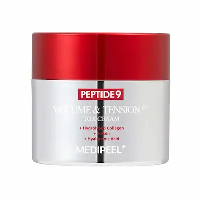

MEDIPEEL Peptide 9 Volume and Tension Tox Pro 50 g: review al cremei de față
Review editorial independent. Produs oferit de
BeautyPanda
Acest material a fost realizat în scop informativ și editorial.
Oferirea produsului pentru recenzie nu înseamnă că articolul a
fost aprobat sau că textul său a fost convenit cu brandul ori cu
vânzătorul.
Informațiile prezentate se bazează pe analiza ingredientelor,
caracteristicile declarate ale produsului și datele disponibile
despre componentele formulei. Acestea nu reprezintă o recomandare
oficială a producătorului și nu înlocuiesc consultul unui
specialist.
Toate denumirile de branduri, mărcile comerciale și denumirile
produselor aparțin deținătorilor legali și sunt utilizate exclusiv
în scop informativ și editorial.
Produsul a fost oferit de BeautyPanda pentru un review editorial independent.
Analizăm MEDIPEEL Peptide 9 Volume and Tension Tox Pro, 50 g : caracteristicile cremei, ingredientele, textura și modul în care poate fi inclusă în rutina zilnică de îngrijire a pielii. Vom examina separat componentele formulei, recomandările de utilizare și tipurile de nevoi ale pielii pentru care produsul ar putea fi o opțiune, fiind destinat îngrijirii pielii și menținerii aspectului ferm.

MEDIPEEL Peptide 9 Volume and Tension Tox Pro 50 g — cremă de față
O cremă pentru îngrijirea zilnică a pielii. Analizăm formula MEDIPEEL Peptide 9 Volume and Tension Tox Pro, ingredientele, textura și rolul pe care produsul îl poate avea în menținerea hidratării și a aspectului ferm al pielii. Vom vedea cui i s-ar putea potrivi, cum poate fi integrată în rutina zilnică și ce aspecte trebuie luate în considerare în cazul pielii sensibile.
De ce merită atenție MEDIPEEL Peptide 9 Volume and Tension Tox Pro?
MEDIPEEL Peptide 9 Volume and Tension Tox Cream Pro, 50 g este o cremă coreeană a cărei formulă combină peptide, ingrediente hidratante, niacinamidă, derivați ai acidului hialuronic, colagen și extracte vegetale. Compoziția este interesantă mai ales prin abordarea complexă a îngrijirii: crema este concepută pentru pielea care prezintă semne ale îmbătrânirii, ajutând la menținerea hidratării, la catifelare și la îmbunătățirea aspectului pielii. Să vedem ce rol au principalele categorii de ingrediente și la ce rezultate realiste ne putem aștepta de la acestea.
Textura și prima utilizare
MEDIPEEL Peptide 9 Volume and Tension Tox Cream Pro, 50 g este interesantă nu doar datorită complexului de peptide, ci și prin combinația de ingrediente hidratante și emoliente. Formula conține glicerină, betaină, mai multe forme de acid hialuronic, pantenol și emolienți, care contribuie la menținerea hidratării și a confortului pielii. La prima utilizare, merită să observi cât de ușor se întinde crema, cât de repede se absoarbe și ce senzație lasă după aplicare.
Începe cu o cantitate mică și distribuie uniform crema pe pielea curățată a feței, evitând zona din jurul ochilor, cu excepția cazului în care producătorul indică altfel. Dacă folosești și un ser, aplică crema după acesta. Nu este necesar să folosești prea mult produs la o singură aplicare: cantitatea potrivită depinde de nevoile pielii și de modul în care crema se combină cu celelalte produse din rutină. Dimineața, încheie rutina cu un produs de protecție solară.
Pentru a evalua rezultatul, urmărește cât de catifelată și hidratată se simte pielea și ce aspect are după aplicare. Ingredientele emoliente, inclusiv emolienții și dimeticona, ajută la reducerea senzației de uscăciune și lasă suprafața pielii mai netedă la atingere. Ingredientele hidratante pot face temporar mai puțin vizibile liniile fine asociate deshidratării. Totuși, acest efect vizual nu trebuie confundat cu o veritabilă fermitate a pielii sau cu refacerea volumului pierdut.
Dacă ai pielea uscată, observă dacă această cremă oferă suficient confort pe parcursul zilei sau dacă ai nevoie de hidratare suplimentară. Dacă ai pielea mixtă sau grasă, începe cu un strat subțire și urmărește dacă apare un luciu excesiv și dacă produsul se simte confortabil sub machiaj sau sub crema cu protecție solară. Percepția texturii diferă de la o persoană la alta, așa că este mai util să evaluezi produsul pe propria piele decât să te bazezi exclusiv pe descrierea acestuia.
La prima utilizare, toleranța pielii este deosebit de importantă. Formula conține parfum și extracte vegetale, astfel că pielea sensibilă poate reacționa chiar și la un produs cu ingrediente hidratante. Înainte de utilizarea regulată, verifică lista completă a ingredientelor de pe ambalaj și testează crema pe o zonă mică de piele. Nu o aplica pe zone iritate sau lezate. Dacă apare o senzație intensă de arsură, mâncărime sau roșeață persistentă, întrerupe utilizarea.
Nu te aștepta ca, după prima aplicare, o cremă cu peptide să îmbunătățească vizibil fermitatea pielii sau să netezească ridurile pronunțate. La început, evaluează în primul rând confortul, hidratarea și aspectul pielii după utilizare. Eventualele schimbări în urma unei rutine constante depind de formula produsului, de starea pielii și de reacția individuală.


Analiza compoziției: ce conține?
Peptidele — accent pe îngrijirea fermității pielii. În compoziție sunt menționate mai multe peptide, inclusiv Copper Tripeptide-1, Acetyl Hexapeptide-8, Acetyl Octapeptide-3, Hexapeptide-9, Palmitoyl Pentapeptide-4 și Palmitoyl Tetrapeptide-7. Acest lucru face din complexul de peptide una dintre caracteristicile principale ale formulei. Astfel de ingrediente sunt utilizate în cosmeticele destinate îngrijirii pielii cu riduri și semne de pierdere a fermității. Efectul lor depinde însă de peptida utilizată, de concentrație, de stabilitate și de formula completă a produsului. Simplul fapt că sunt prezente mai multe peptide nu înseamnă că această cremă va oferi un efect de lifting pronunțat sau va elimina ridurile profunde.
Niacinamida — pentru un aspect mai uniform și mai îngrijit al pielii. Niacinamida apare relativ sus în lista publicată a ingredientelor. Acest component este utilizat pe scară largă în produsele de îngrijire pentru susținerea barierei cutanate, îmbunătățirea aspectului general al pielii și îngrijirea tenului cu nuanță neuniformă. Folosită regulat în produse potrivite, niacinamida poate contribui la un aspect vizual mai uniform al pielii și la diminuarea vizibilității anumitor semne de ten tern. Totuși, intensitatea rezultatelor depinde de concentrația ingredientului și de particularitățile individuale ale pielii.
Mai multe forme de acid hialuronic — accent pe hidratare. Formula conține Sodium Hyaluronate, Hydrolyzed Hyaluronic Acid, Sodium Acetylated Hyaluronate, Hydroxypropyltrimonium Hyaluronate, Sodium Hyaluronate Crosspolymer și alți derivați ai acidului hialuronic. Aceștia contribuie la reținerea apei în straturile superficiale ale pielii și la menținerea senzației de hidratare. Datorită acestui efect, pielea poate părea mai netedă, iar liniile fine asociate uscăciunii pot deveni mai puțin vizibile. Este vorba despre un efect de îngrijire și hidratare, nu despre refacerea volumului pierdut al țesuturilor.
Glicerina, betaina și ingredientele emoliente — confort după aplicare. Glicerina și betaina contribuie la menținerea hidratării, în timp ce Caprylic/Capric Triglyceride, Cetyl Ethylhexanoate, Cetearyl Alcohol, Glyceryl Stearate, dimeticona și cerurile ajută la catifelarea pielii și oferă o senzație mai confortabilă după aplicare. Această combinație poate fi deosebit de potrivită pentru pielea care are nevoie de mai multă catifelare și de protecție împotriva senzației de uscăciune. Totuși, prezența cerurilor, a emolienților și a siliconului poate influența densitatea texturii, așa că persoanele cu ten gras ar trebui să observe cât de confortabil se simte produsul pe propria piele.
Pantenolul și ectoina — sprijin suplimentar pentru îngrijirea pielii. Pantenolul contribuie la menținerea hidratării și a confortului pielii, iar ectoina este utilizată în cosmetice pentru protejarea pielii împotriva unor factori externi nefavorabili și pentru susținerea funcției de barieră. Formula conține și Dipotassium Glycyrrhizate, un ingredient folosit în produsele destinate îngrijirii pielii predispuse la iritații. Aceste componente completează baza hidratantă și emolientă a cremei, însă nu garantează că pielea sensibilă nu va prezenta reacții.
Colagenul și elastina — pentru condiționarea pielii. În lista ingredientelor sunt menționate colagenul, colagenul hidrolizat și solubil, aminoacizii de colagen, precum și elastina hidrolizată. În cosmetice, astfel de ingrediente contribuie în principal la îngrijirea suprafeței pielii și la menținerea hidratării și a netezimii acesteia. Nu trebuie confundate cu refacerea colagenului și elastinei proprii în straturile profunde ale pielii: aplicarea unei creme nu este echivalentă cu procedurile care urmăresc modificarea structurii țesuturilor.
Adenozina — ingredient suplimentar în îngrijirea anti-aging. Adenozina este utilizată în formulele cosmetice destinate îngrijirii pielii cu linii fine și semne ale îmbătrânirii. În combinație cu ingredientele hidratante și peptidele, aceasta completează conceptul general al cremei, orientat spre un aspect mai neted și mai îngrijit al pielii. Totuși, rezultatul real nu poate fi estimat doar pe baza listei ingredientelor: contează concentrațiile, particularitățile formulei finale și regularitatea utilizării.
Extracte vegetale și ingrediente antioxidante. În compoziția publicată sunt menționate și Centella asiatica, ceai verde, lemn-dulce, mușețel, aloe vera, rozmarin, lavandă și alte ingrediente vegetale. În plus, formula conține tocoferol și astaxantină, utilizate în cosmetice ca ingrediente cu rol antioxidant. Acestea completează formula, însă numărul extractelor din listă nu permite, de unul singur, evaluarea eficienței lor. Dacă pielea ta este predispusă la reacții, ia în considerare și faptul că produsul conține parfum.
Cui i s-ar putea potrivi această cremă? Merită luată în considerare în special de persoanele care caută o îngrijire hidratantă, cu accent pe fermitate, netezime și diminuarea vizuală a semnelor îmbătrânirii. Pielea normală și cea uscată ar putea beneficia de combinația de ingrediente hidratante și emoliente. Pentru tenul mixt sau gras, este important să verifici dacă textura relativ bogată este confortabilă. În cazul pielii sensibile, trebuie luate în calcul parfumul și extractele vegetale, iar înainte de utilizarea regulată este recomandat un test pe o zonă mică de piele.
Ce este important să știi înainte de cumpărare? Unul dintre punctele forte ale formulei este abordarea complexă a îngrijirii: hidratare, catifelare, susținerea barierei cutanate și un complex de peptide destinat pielii cu semne ale îmbătrânirii. Totuși, o listă lungă de ingrediente active nu garantează că fiecare dintre acestea va avea un efect la fel de vizibil. Rezultatele depind în mare măsură de concentrații și de particularitățile produsului finit. Este mai realist să privești crema ca pe o parte a rutinei zilnice de îngrijire, nu ca pe un produs care garantează liftingul facial sau eliminarea ridurilor profunde.


Cui i s-ar putea potrivi această formulă?
MEDIPEEL Peptide 9 Volume and Tension Tox Cream Pro, 50 g ar putea fi o opțiune pentru persoanele care doresc să completeze rutina zilnică de îngrijire cu o cremă axată pe fermitate, netezime și hidratarea pielii. Combinația de peptide, niacinamidă, mai multe forme de acid hialuronic, colagen, elastină și ingrediente emoliente face formula interesantă pentru îngrijirea pielii cu primele semne sau cu semne mai vizibile ale îmbătrânirii. Totuși, alegerea cremei ar trebui să țină cont nu doar de efectul dorit, ci și de nevoile individuale ale pielii.
Pentru pielea normală și uscată, ingredientele hidratante precum glicerina, betaina și derivații acidului hialuronic pot fi deosebit de utile, alături de substanțele emoliente care contribuie la reducerea senzației de uscăciune. În cazul tenului mixt sau gras, este mai bine să începi cu o cantitate mică și să evaluezi finisajul: dacă produsul se simte confortabil, dacă lasă un luciu excesiv și dacă se combină bine cu celelalte produse din rutină. Prezența complexului de peptide nu determină, de una singură, cât de potrivită va fi crema pentru un anumit tip de piele.
Dacă ai pielea sensibilă, acordă atenție listei complete de ingrediente: formula conține parfum și extracte vegetale, care pot să nu fie potrivite pentru unele persoane. Înainte de utilizarea regulată, se recomandă testarea produsului pe o zonă mică de piele. Evită introducerea simultană a mai multor produse noi, pentru a putea identifica mai ușor cauza unei eventuale reacții. Dacă apar roșeață persistentă, mâncărime sau o senzație intensă de arsură, întrerupe utilizarea.
Concluzie: MEDIPEEL Peptide 9 Volume and Tension Tox Cream Pro poate fi luată în considerare pentru o rutină complexă de îngrijire a pielii care are nevoie de hidratare, catifelare și susținerea unui aspect mai neted și mai ferm. Peptidele completează abordarea anti-aging a formulei, în timp ce niacinamida, acidul hialuronic, pantenolul și ingredientele emoliente contribuie la celelalte obiective de îngrijire. Totuși, crema nu garantează eliminarea ridurilor profunde sau refacerea volumului facial pierdut: rezultatele depind de particularitățile pielii, de formula completă și de regularitatea utilizării.
Unde poți găsi MEDIPEEL Peptide 9 Volume and Tension Tox Cream Pro?
MEDIPEEL Peptide 9 Volume and Tension Tox Cream Pro, 50 g a fost oferită pentru recenzie de magazinul BeautyPanda. Pentru informații actualizate despre disponibilitate, preț și condițiile de cumpărare, îți recomandăm să contactezi direct vânzătorul.
Magazinele Beauty Panda din Republica Moldova:
📍 Soroca
str. Grigore Vieru 9B, Soroca, Moldova, MD-3001
📍 Drochia
str. 31 August 20/C, Drochia, Moldova
*Verifică disponibilitatea, prețul și condițiile de cumpărare la vânzător înainte de a vizita magazinul. Linkul duce către pagina Beauty Panda de pe Instagram.
Întrebări frecvente
Pot folosi MEDIPEEL Peptide 9 Volume and Tension Tox Cream Pro în fiecare zi?
Dacă pielea tolerează bine produsul, crema poate fi inclusă în rutina zilnică de îngrijire, respectând recomandările producătorului. Aplică o cantitate mică pe pielea curată a feței și urmărește reacția acesteia. Dacă apar senzație intensă de arsură, mâncărime, roșeață persistentă sau alte semne de iritație, întrerupe utilizarea. Pentru a proteja pielea în rutina de dimineață, folosește și un produs de protecție solară cu SPF 30 sau mai mare.
Este MEDIPEEL Peptide 9 Volume and Tension Tox Cream Pro potrivită pentru pielea predispusă la acnee?
Acest lucru depinde de particularitățile individuale ale pielii și de toleranța la formulă. Crema este destinată îngrijirii cosmetice și poate contribui la menținerea hidratării și a netezimii pielii, însă nu este un medicament pentru tratarea acneei. Dacă ai pielea predispusă la pori înfundați sau inflamații, începe cu o cantitate mică și urmărește reacția pielii. Dacă erupțiile se intensifică, întrerupe utilizarea și consultă un dermatolog dacă este necesar.
Ajută MEDIPEEL Peptide 9 Volume and Tension Tox Cream Pro împotriva ridurilor și a pierderii fermității pielii?
Formula cu peptide și ingrediente hidratante este concepută pentru îngrijirea pielii care are nevoie de hidratare, netezime și un aspect mai îngrijit. Prin hidratare, liniile fine asociate uscăciunii pot deveni mai puțin vizibile. Totuși, aspectul ridurilor și fermitatea pielii depind de numeroși factori, iar rezultatele utilizării diferă de la o persoană la alta. În ciuda denumirii Tox Cream, produsul nu trebuie considerat un echivalent al toxinei botulinice injectabile: crema nu garantează eliminarea ridurilor sau un efect de lifting pronunțat.
Pot combina crema cu retinoizi și acizi?
Compatibilitatea depinde de produsele folosite și de sensibilitatea pielii. Dacă rutina ta include deja retinoizi, acizi AHA sau BHA și alte ingrediente active, introdu crema treptat și urmărește reacția pielii. Dacă apar uscăciune, senzație de arsură sau roșeață, simplifică temporar rutina și reevaluează frecvența utilizării produselor active. Dacă nu ești sigură cum să combini produsele, cere sfatul unui dermatolog.
Este crema MEDIPEEL potrivită pentru tenul gras sau mixt?
Și tenul gras sau mixt are nevoie de hidratare, însă confortul la aplicare depinde de textura cremei și de particularitățile pielii. Începe cu o cantitate mică și observă cât de repede se absoarbe produsul, dacă lasă o peliculă nedorită și dacă favorizează apariția unor noi erupții. Dacă ți se pare prea densă, încearcă să o aplici într-un strat subțire sau să reduci frecvența utilizării.
Ce ar trebui să fac dacă după aplicarea MEDIPEEL Peptide 9 Volume and Tension Tox Cream Pro apar senzație de arsură sau roșeață?
Dacă apare o senzație intensă sau persistentă de arsură, mâncărime, roșeață persistentă ori umflare, întrerupe utilizarea produsului. Dacă reacția apare imediat după aplicare, clătește delicat crema cu apă și evită temporar alte produse care ar putea irita pielea. În cazul simptomelor severe, persistente sau care se agravează, solicită asistență medicală. Dacă ai pielea sensibilă, este recomandat să testezi produsul pe o zonă mică de piele înainte de utilizarea regulată.
Pot folosi MEDIPEEL Peptide 9 Volume and Tension Tox Cream Pro în timpul sarcinii?
Decizia depinde de compoziția completă a versiunii respective a produsului și de situația individuală. Verifică lista ingredientelor de pe ambalaj și discută cu medicul înainte de utilizare dacă ești însărcinată, planifici o sarcină sau ai îndoieli cu privire la siguranța unui ingredient. Nu presupune că produsul este sigur doar pentru că formula conține peptide sau ingrediente hidratante.